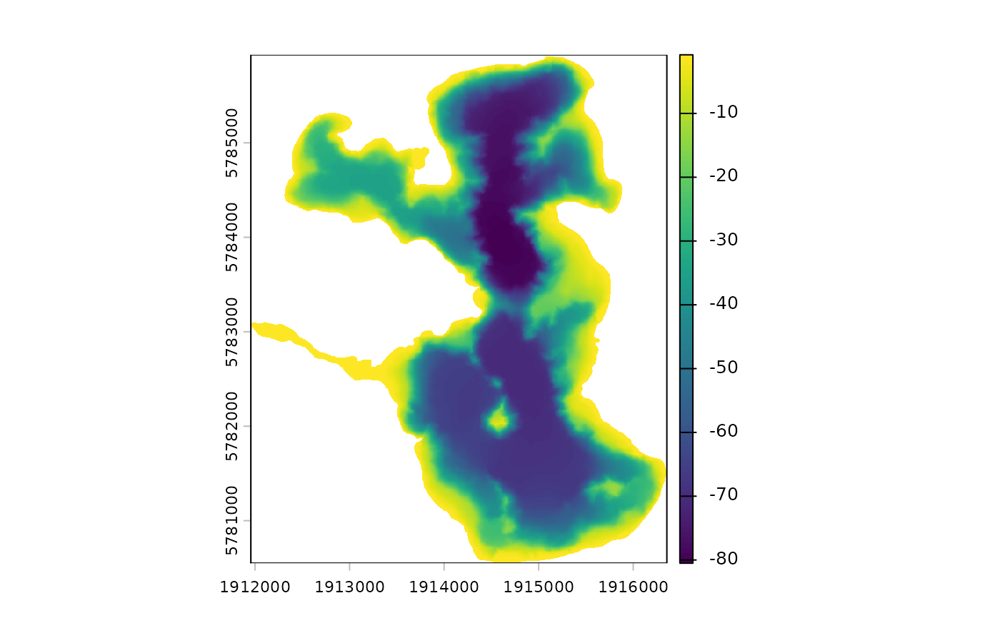

Calculate the volume of a lake using bathymetry data or a hypsograph
calculate_lake_volume.RdCalculate the volume of a lake using bathymetry data or a hypsograph
Arguments
- bathy_raster
SpatRaster object with the bathymetry data.
- hyps
data.frame with columns 'depth' and 'area'.
- depth
numeric. The depth to which to calculate the volume. If provided, the volume will be calculated to this depth. If not provided, the volume will be calculated to the maximum depth of the bathymetry raster or the hypsograph.
- return_rast
logical. If TRUE, return a raster with the calculated volume in each grid cell. Default is FALSE.
Value
numeric. The volume of the lake in cubic meters (m^3).
If return_rast is TRUE, a SpatRaster object with the volume
in each grid cell is returned.
Examples
shoreline <- readRDS(system.file("extdata/rotoma_shoreline.rds",
package = "bathytools"))
point_data <- readRDS(system.file("extdata/depth_points.rds",
package = "bathytools"))
bathy_raster <- rasterise_bathy(shoreline = shoreline,
point_data = point_data, crs = 2193)
#> Generating depth points... [2025-08-11 22:56:20]
#> Finished! [2025-08-11 22:56:21]
#> Interpolating to raster... [2025-08-11 22:56:21]
#> Adjusting depths >= 0 to -0.82 m
#> Finished! [2025-08-11 22:56:38]

calculate_lake_volume(bathy_raster = bathy_raster)
#> [1] 435832675